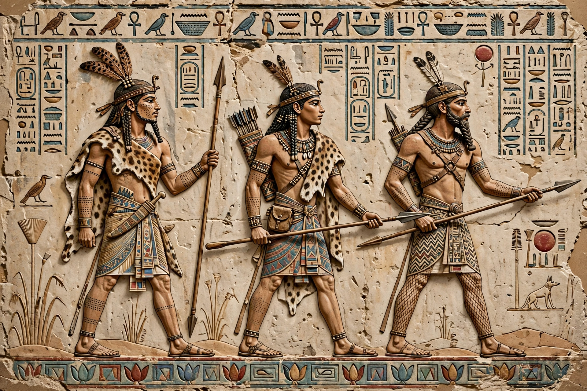

The Meshwesh (often abbreviated in ancient Egyptian as Ma) were an ancient Libyan tribe, known from Egyptian texts from the New Kingdom onward, some of whom settled in the western Nile Delta and founded the 22nd Dynasty.

Meshwesh fought as mercenaries and enemies of Egypt under Ramesses II and Merneptah, and joined the Sea Peoples invasions under Ramesses III. Over generations they became Egyptianised chiefs of the Ma.
Shoshenq I, a Meshwesh chief, became pharaoh around 943 BCE, founding the Libyan 22nd Dynasty centred at Bubastis and Tanis.